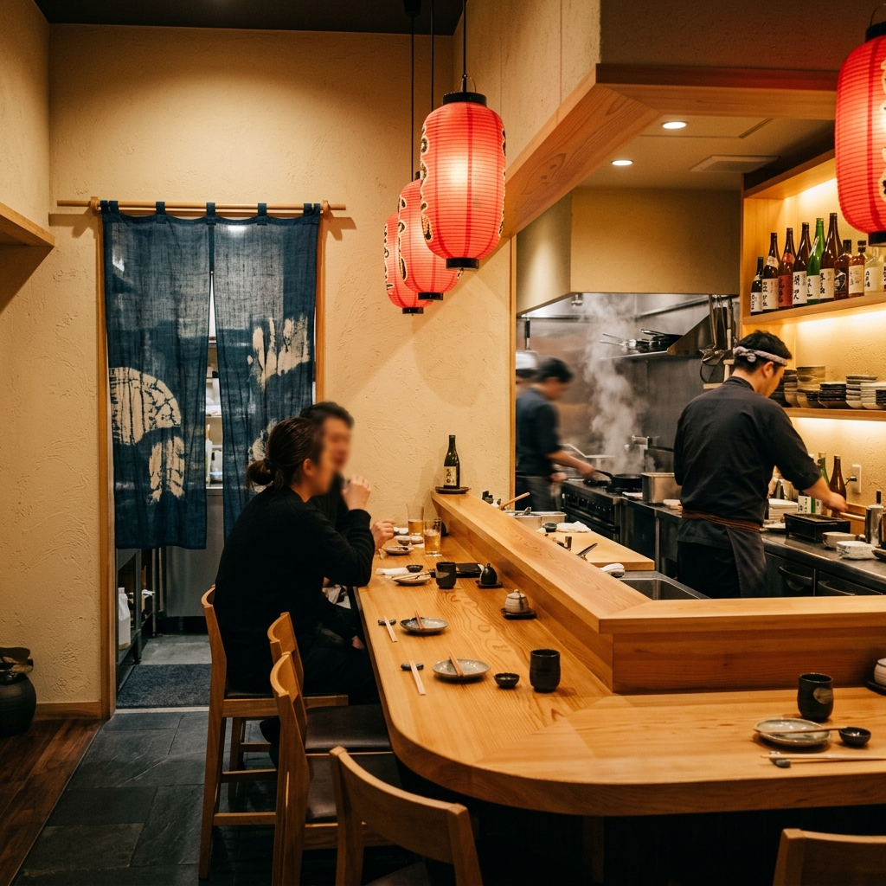

簡
Simplicity
Simple ingredients, thoughtful preparation. We let the natural flavors speak for themselves.

MACHI is a modern Japanese kitchen inspired by the warmth, simplicity, and comforting flavors of Japanese dining culture.
From hearty ramen and flavorful donburi to fresh sushi and calming matcha, MACHI brings Japanese food into everyday moments. We believe that great food doesn't have to be complicated—it just needs to be made with care.
Simple ingredients, thoughtful preparation. We let the natural flavors speak for themselves.
A balance of flavor, texture and presentation in every single bowl we serve.
Japanese food made to bring people together, creating comfortable moments everyday.